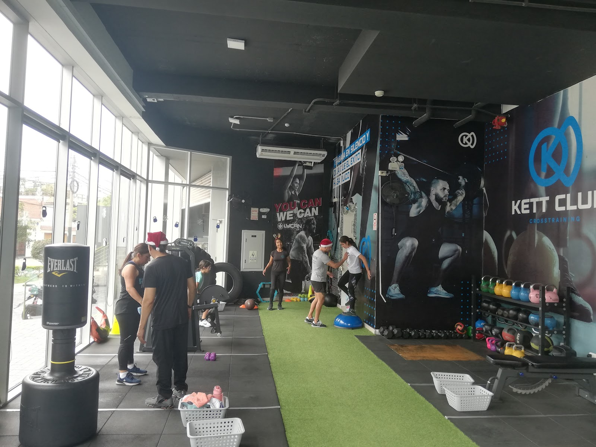
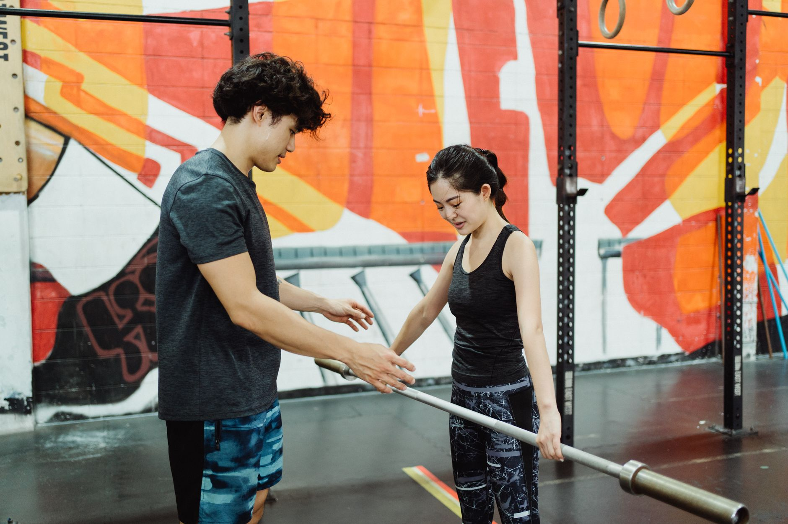
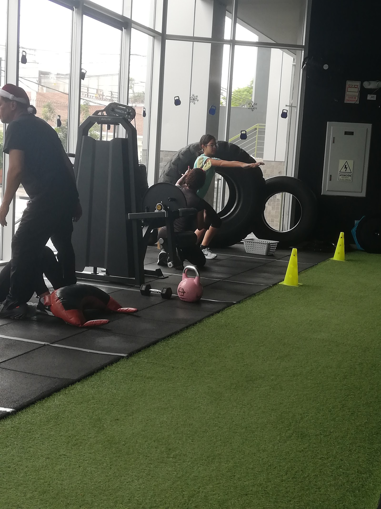

Crosstraining en grupo
Sesiones guiadas de principio a fin. Grupos que permiten que el coach vea a cada persona, no una clase de cincuenta.

Centro de preparación física · Magdalena
Nadie te enseña una máquina y te deja solo. Alguien está contigo, mirando tu técnica, corrigiendo, y ajustando el plan a lo que tu cuerpo puede hoy.

Baja: el contenido se mueve, él no.
No lo decimos nosotros: lo escribió María José en su reseña de Google. Es el miedo real de quien entra por primera vez a un gimnasio — no el esfuerzo, sino quedarse solo entre máquinas sin saber si lo está haciendo mal.
Cada repetición tiene a alguien mirándola. Si la cadera se va, si el hombro se adelanta, si estás compensando con la espalda — lo corriges en el momento, no tres meses después en el fisioterapeuta.
Trazas tu objetivo y ellos preparan un plan de entrenamiento personalizado. Si tienes una lesión, se trabaja alrededor de ella. Hay quien llegó aquí por indicación de su médico, y eso cambia cómo se entrena.
«Casi 2 años con ellos», escribe Francisco. En un rubro donde la matrícula de enero se evapora en marzo, quedarse es el único indicador que no se puede maquillar.
Crosstraining: fuerza, resistencia y movilidad en la misma sesión. Con acompañamiento, no con una rutina impresa.
Sesiones guiadas de principio a fin. Grupos que permiten que el coach vea a cada persona, no una clase de cincuenta.
Se traza el objetivo y se arma el plan. Fuerza, resistencia, recomposición o preparación para competir.
Si vienes con una lesión o derivado por tu médico, se entrena alrededor de ella. Se avanza, pero sin pasar por encima de tu cuerpo.
Programa personalizado para seguir desde casa o de viaje, sin perder el seguimiento del coach.
4.8 en Google. Estas son textuales, con nombre y verificables en su ficha de Maps — no las escribimos nosotros.
«No son el típico entrenamiento en el que el coach solo te dice qué hacer y se va a otro lado, sino que está ahí contigo revisando tu postura.»
María José · Google · reseña verificable
«Por indicaciones del doctor que debiera hacer ejercicios, en busca de algún gym que no me ignoren… fui a mi clase de prueba y me encantó.»
Andrea del Pilar · Google
«Me ha ayudado mucho con la fuerza, resistencia y me siento súper segura en ese ambiente. Son súper considerados y te ayudan en caso tengas alguna lesión.»
María Fernanda Yep · Google
«Es un centro de preparación física excelente, con instructores muy preparados… Debes trazar tu objetivo y ellos preparan un plan de entrenamiento personalizado.»
Emilio Chocobar Reyes · Google
«Tengo casi 2 años con ellos y he aumentado mi fuerza y resistencia considerablemente. La atención es A1 y los coaches son top.»
Francisco Mejía Ortiz · Google
Ventanal a la calle, franja de grama que cruza el piso y un rack de kettlebells de colores. Fotos reales de su ficha de Google.


Escribe por WhatsApp, cuenta qué buscas y si tienes alguna lesión. Te responden ellos, no un bot.